S3-like Object Storage
Amazon S3 jaisa object store — metadata aur data ko alag karna, placement service, WAL-style data files, replication vs erasure coding (6 nines vs 11 nines durability), checksums, versioning, multipart upload aur garbage collection.
Introduction: block vs file vs object
- Block storage (1960s se): HDD/SSD — server se directly attached ya network (iSCSI/FC) se. Raw blocks; server unpe file system banata hai ya DB seedha use karta hai.
- File storage: block ke upar abstraction — folders aur files (NFS, SMB).
- Object storage: performance kurbaan karke durability, vast scale, low cost. Flat namespace (koi real directory nahi), RESTful API. Archival, backup, aur aaj data lakes.
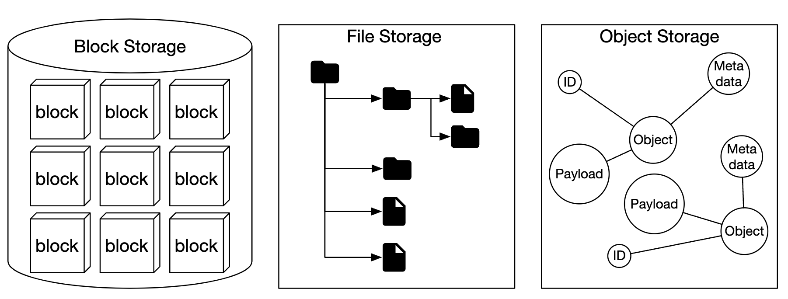
| Block | File | Object | |
|---|---|---|---|
| Mutable content | Y | Y | N (versioning hai) |
| Cost | High | Medium-high | Low |
| Performance | Medium-high, very high | Medium-high | Low-medium |
| Consistency | Strong | Strong | Strong (S3 Dec 2020 se strong read-after-write) |
| Access | SAS/iSCSI/FC | CIFS/SMB, NFS | RESTful API |
| Scalability | Medium | High | Vast |
| Good for | VMs, databases | General file access | Binary/unstructured data |
Terms: Bucket (globally unique naam wala container), Object (data + metadata), Versioning, URI, SLA. S3 Standard-IA SLA: 99.999999999% (11 nines) durability across AZs, poora AZ destroy ho jaaye to bhi data safe, 99.9% availability design.
Step 1: Requirements aur scope
- Features: bucket create, object upload/download, versioning, list objects.
- Bade aur chhote dono objects efficiently.
- 100 PB/year.
- 6 nines durability (99.9999%), 4 nines availability (99.99%).
- Storage efficiency — cost kam, reliability high.
Back-of-the-envelope
Bottleneck: disk capacity ya IOPS. Ek SATA 7200rpm HDD ≈ 100-150 random seeks/sec.
- Mix: 20% small (<1 MB, median 0.5 MB), 60% medium (1-64 MB, median 32 MB), 20% large (>64 MB, median 200 MB).
- 100 PB = 10^11 MB, 40% utilisation → 4×10^10 MB / (0.2×0.5 + 0.6×32 + 0.2×200 = 59.3 MB) ≈ 0.68 billion objects.
- Metadata 1 KB/object → ~0.68 TB metadata. Data petabytes mein, metadata terabyte mein — dono ko alag scale karna obvious hai.
Step 2: High-level design
Object storage ki properties:
- Immutability — delete/replace ho sakta hai, in-place update nahi.
- Key-value — URI = key, HTTP se value.
- Write once, read many — LinkedIn research ke hisaab se ~95% operations reads.
- Small + large objects dono.
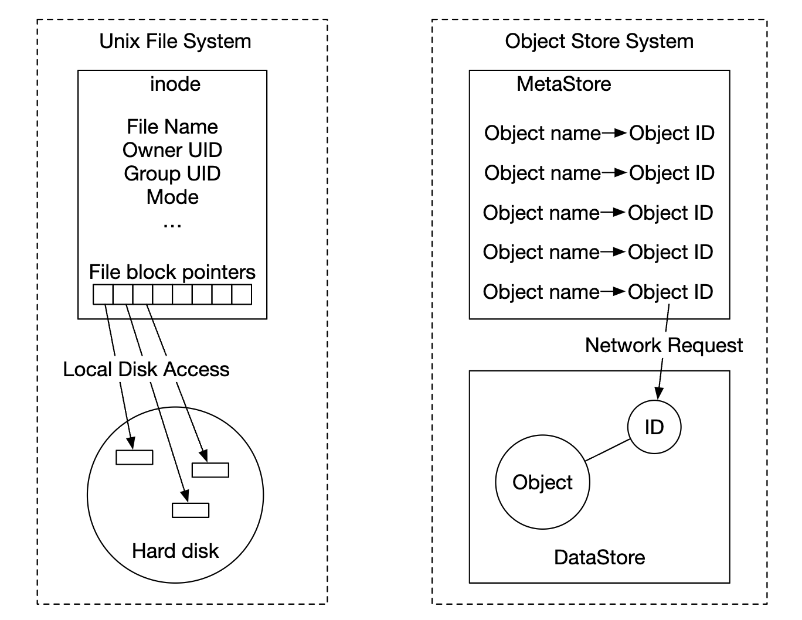
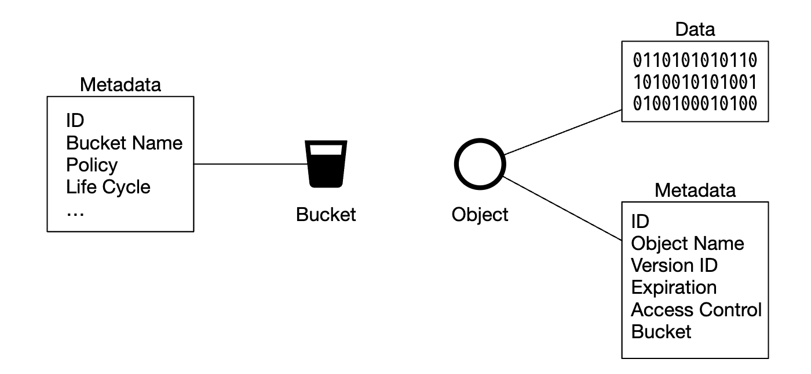
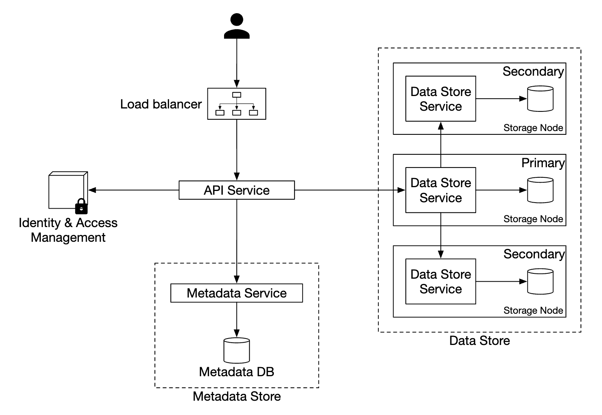
- LB, API service (stateless orchestrator), IAM (authn/authz), Data store (object ID/UUID based), Metadata store.
Upload
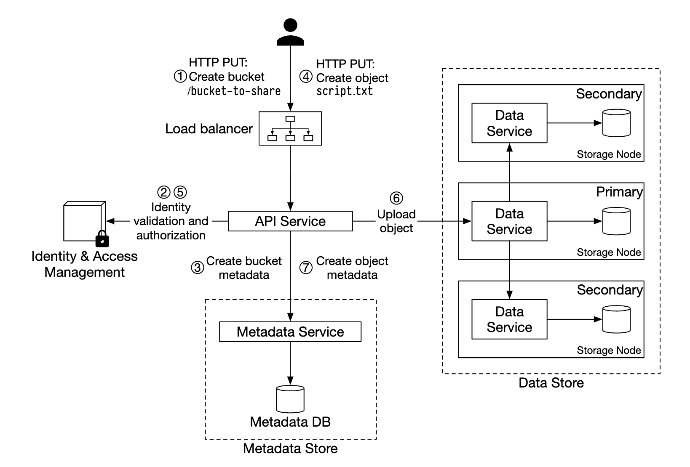
/bucket-to-share → ② IAM check → ③ Metadata mein bucket entry. ④ HTTP PUT object script.txt → ⑤ IAM write permission check → ⑥ payload Data Store ko (primary, phir secondaries), UUID wapas → ⑦ Metadata mein object entry (object_id, bucket_id, name…).PUT /bucket-to-share/script.txt HTTP/1.1
Host: foo.s3example.org
Date: Sun, 12 Sept 2021 17:51:00 GMT
Authorization: authorization string
Content-Type: text/plain
Content-Length: 4567
x-amz-meta-author: Alex
[4567 bytes of object data]Download
GET /bucket-to-share/script.txt HTTP/1.1
Host: foo.s3example.org
Date: Sun, 12 Sept 2021 18:30:01 GMT
Authorization: authorization string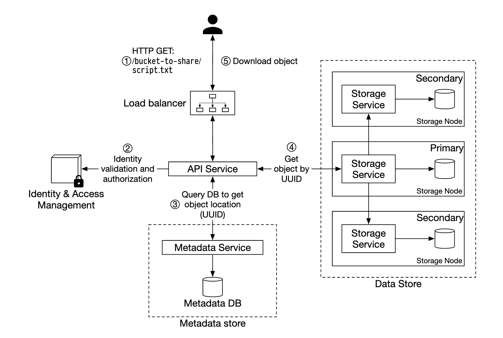
/bucket-to-share/script.txt → LB → API Service. ② IAM read permission. ③ Metadata DB se object ka UUID. ④ Data Store se UUID se object (Primary/Secondary Storage Nodes). ⑤ Download client ko. "Folders" asal mein bucket + object name ka prefix hain (abc/def.txt).Step 3a: Data store deep dive
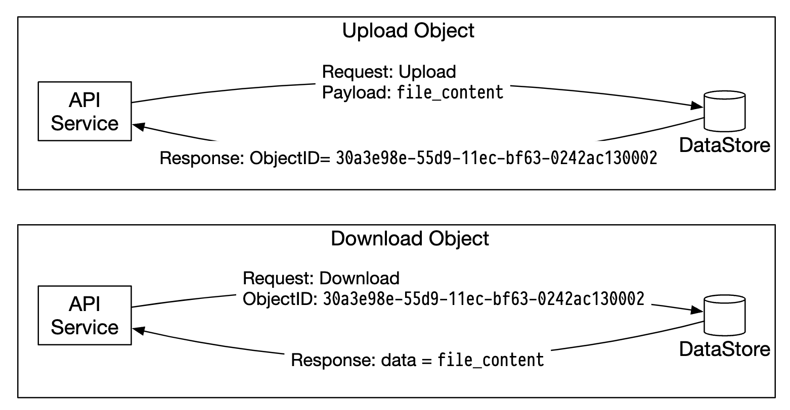
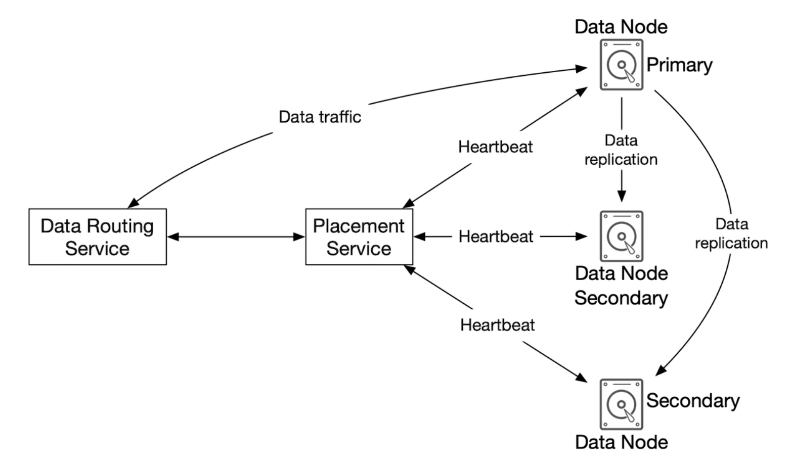
- Data routing service (stateless, REST/gRPC): placement service se best node poochta hai, read/write data nodes pe.
- Placement service: virtual cluster map rakhta hai (physical topology), heartbeats se dead nodes hata-ta hai. Critical hai → 5 ya 7 node cluster, Paxos/Raft se sync. 7 nodes = 3 failures tolerate (majority 4).
- Data nodes: actual data; daemon heartbeat bhejta hai — kitni disks, har disk pe kitna data.
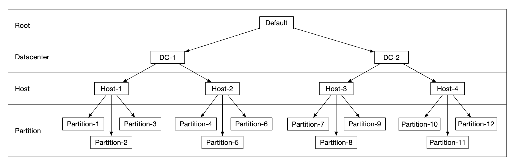
Data persistence flow
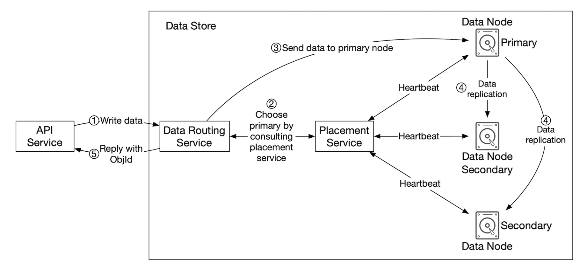
- UUID → replication group consistent hashing se deterministic.
- Primary saari replication ke baad respond karta hai → strong consistency, higher latency.
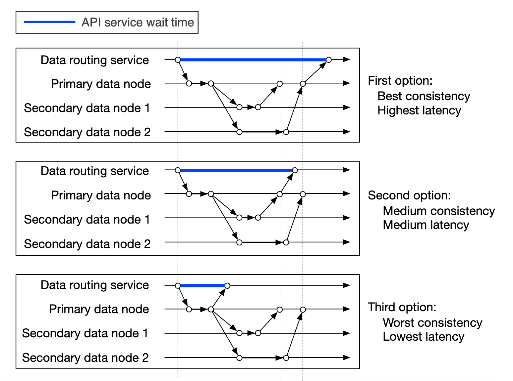
Data organisation — chhote files ki problem
Har object alag file: 4 KB block size pe chhote files block waste karte hain, aur bahut saare inodes OS ko pasand nahi (limit bhi hai). Fix: chhote objects ko bade file mein append (WAL jaisa); file few GB hone pe read-only aur naya file.
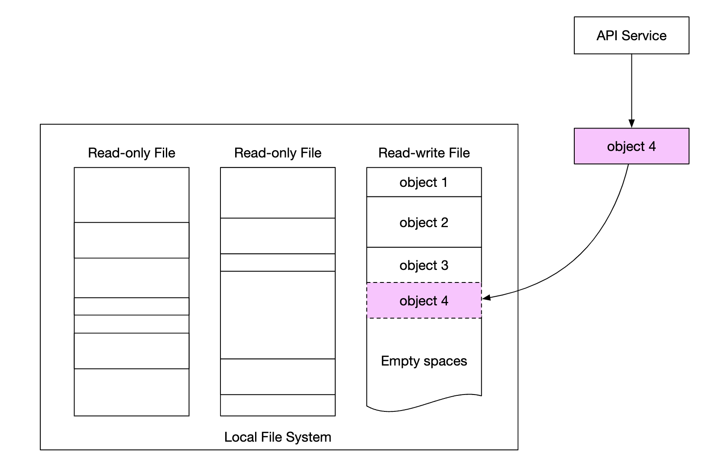
Downside: ek file pe writes serialize — multiple cores wait karte hain. Fix: har core ka apna read-write file.
Object lookup
Object kis file mein, kis offset pe? Table: object_id, filename, file_offset, object_size. Low write + high read → relational; aur har data node ko sirf apna data chahiye → SQLite local, har data node pe (central DB cluster = extra network hop + scaling headache).
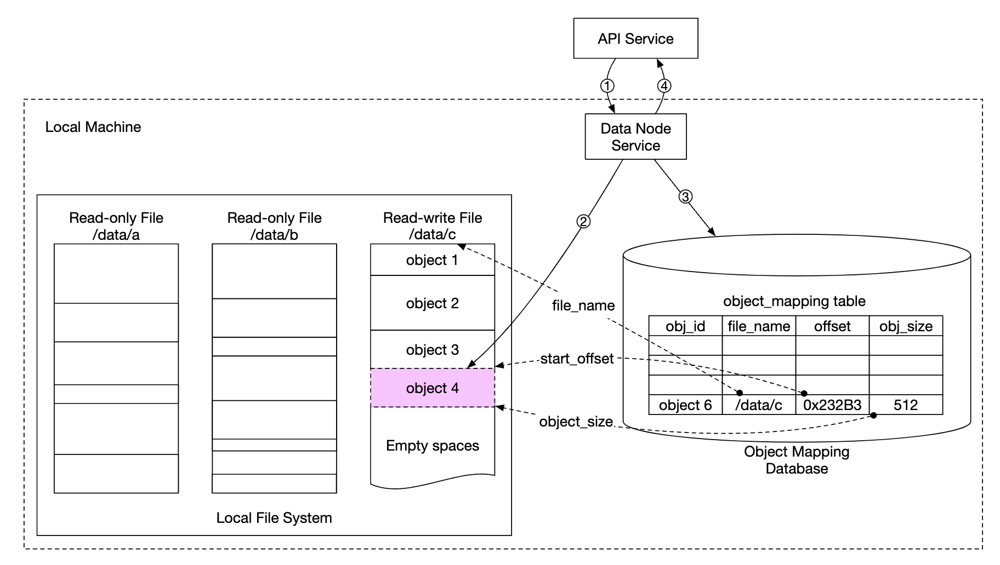
/data/c read-write file mein append. ③ Object Mapping Database (local) mein row: obj_id, file_name=/data/c, offset=0x232B3, obj_size=512 — dashed arrows dikhate hain ki file_name, start_offset, object_size kis cheez ko point karte hain. ④ Response.Step 3b: Durability — replication vs erasure coding
6 nines ke liye har failure case socho. Hardware failure ke liye replicas, lekin failure domains (rack, DC, power, network) ke across — ek event ek domain ke saare nodes maar sakta hai.
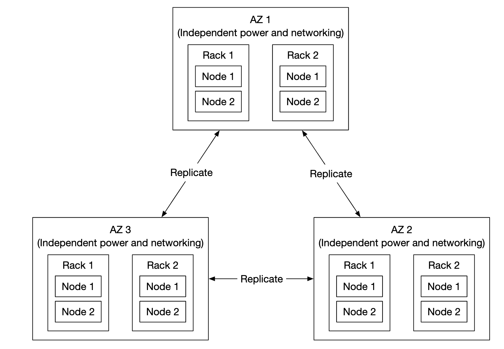
HDD annual failure rate ~0.81% maan ke, 3 copies ≈ 6 nines durability.
Erasure coding
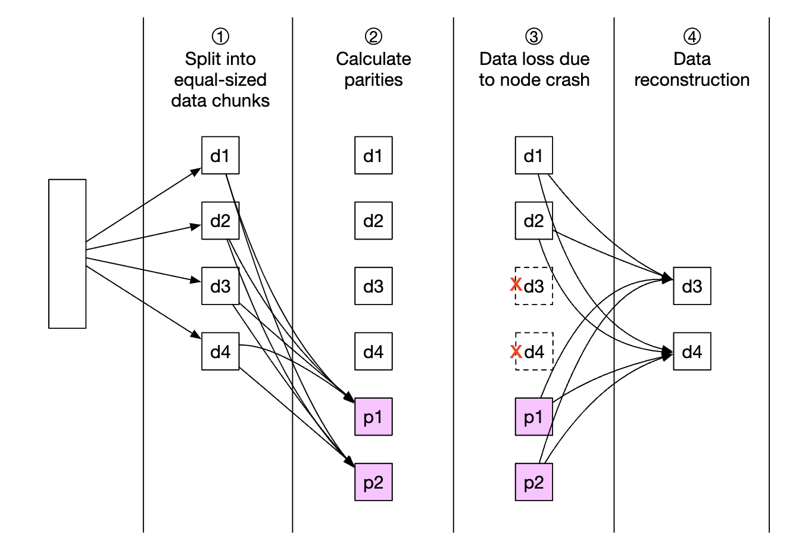
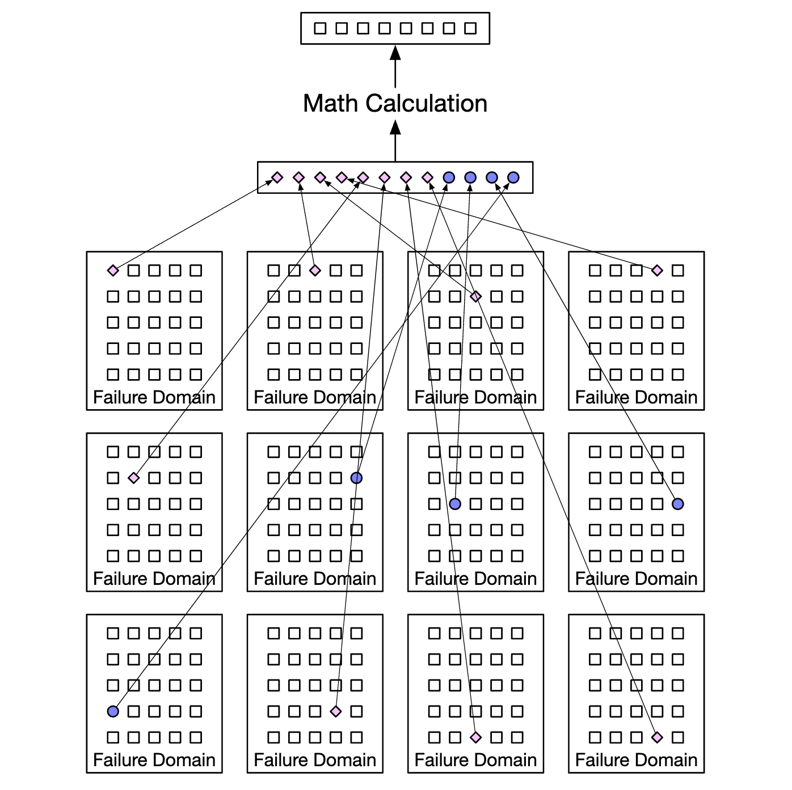
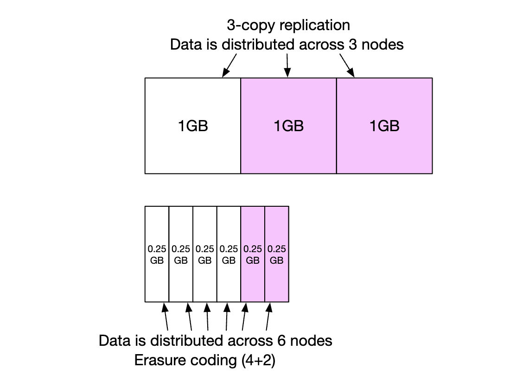
| Replication (3 copies) | Erasure coding (8+4) | |
|---|---|---|
| Durability | ~6 nines | ~11 nines |
| Storage overhead | 200% | 50% |
| Compute | None | Parity calculate karna |
| Read/write perf | Fast — ek node se read | Slower — multiple nodes se chunks, reconstruct |
| Complexity | Simple | Bahut harder |
11 nines claim ka source: Backblaze erasure-coding-durability (GitHub) — Backblaze ka open-source calculator/script jo shards count, parity count, drive annual failure rate aur rebuild time leke statistically durability "nines" nikaalta hai. Kaise padhein: README ke inputs badal ke dekho ki parity +1 karne se nines kitne badhte hain. Detail: links guide.
Correctness — checksums
Poori disk fail ho to pata chal jaata hai; silent corruption (bit rot) nahi. Fix: checksums (hash of contents).
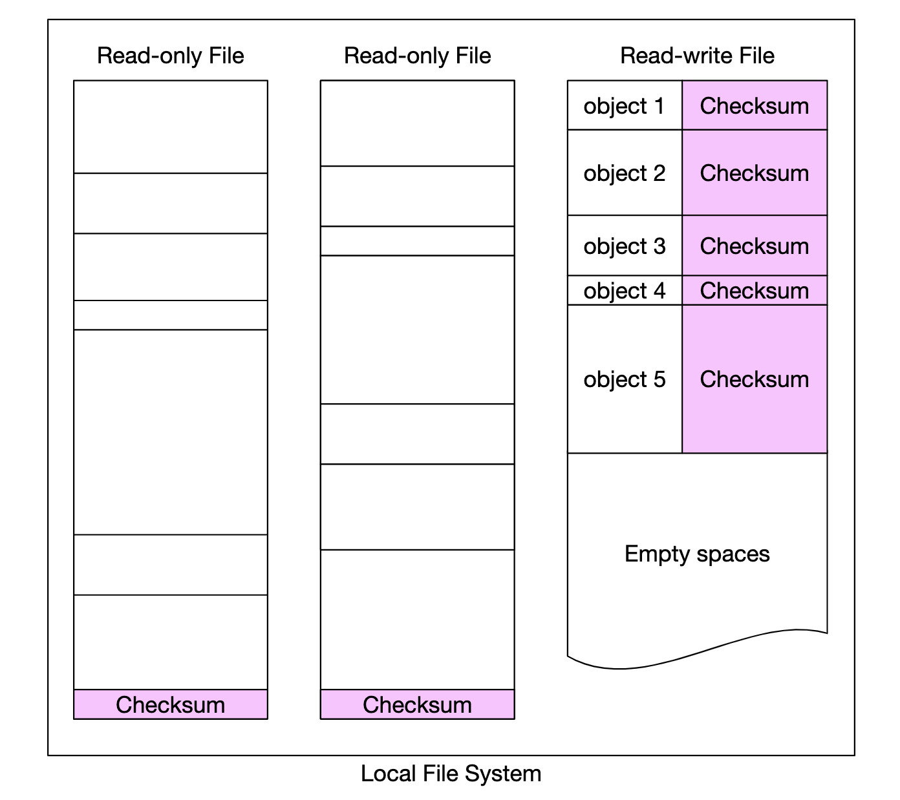
8+4 EC mein har chunk alag fetch karke uska checksum verify hota hai.
Step 3c: Metadata data model aur sharding
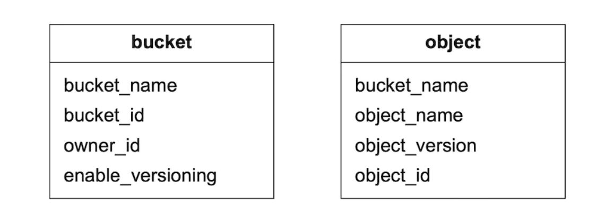
Queries: naam se object ID, naam se insert/delete, prefix se list.
- Bucket table chhota (per-user bucket limit) → ek DB, read replicas.
- Object table bada → shard.
bucket_idse shard = hotspot (ek bucket mein billions objects).object_idse shard = even load lekin name-based queries slow. Choice:hash(bucket_name, object_name)— zyada tar queries isi pe.
Listing objects
SELECT * FROM object WHERE bucket_id = "123" AND object_name LIKE 'abc/%'Sharded DB mein yeh har shard pe chalana padega aur memory mein merge — pagination nightmare (har shard ka alag offset). Do raaste: (1) listing performance sacrifice karo (object stores listing ke liye optimised nahi hote), (2) denormalised listing table sharded by bucket_id — listing ek shard pe.
WHERE object_name > :lastKey ORDER BY object_name LIMIT 1000. Spring Data mein bhi offset pagination bade tables pe slow hoti hai, keyset better.Step 3d: Object versioning
object_version column (TIMEUUID) — har naya version naya object_id.
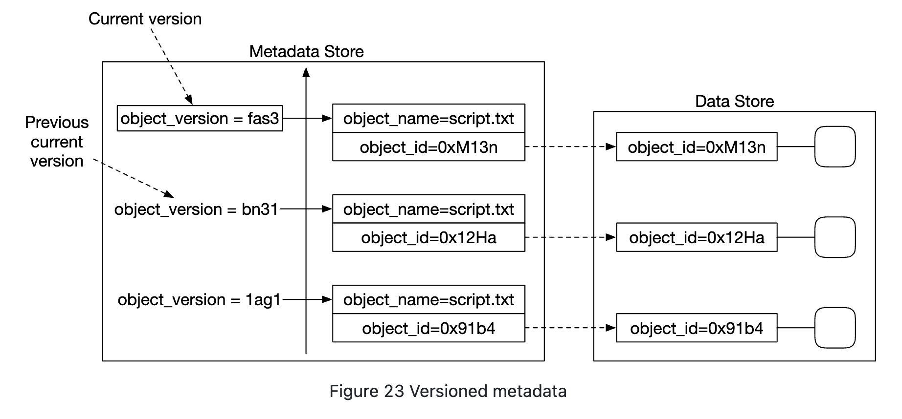
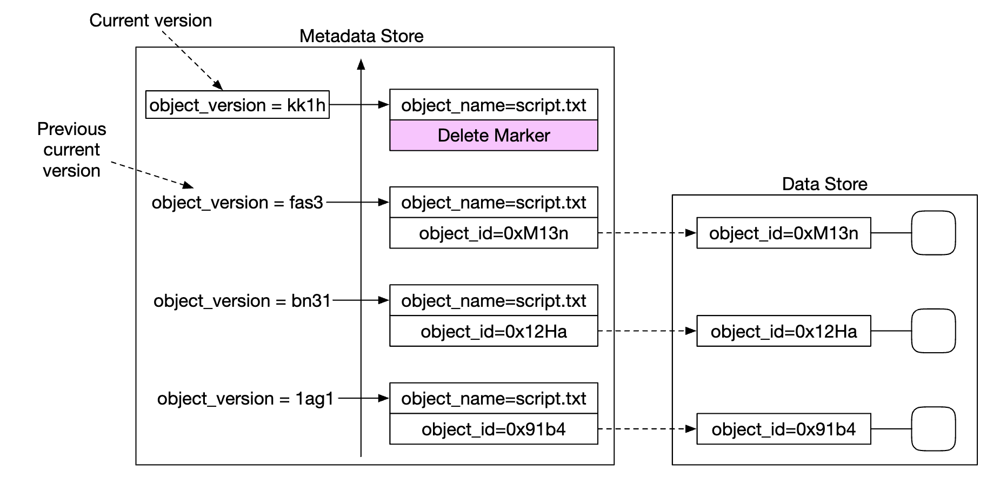
Step 3e: Multipart upload
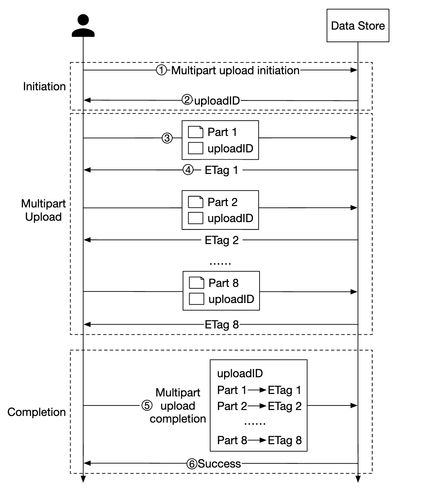
- ETag = part ka MD5 checksum.
- Complete pe data store parts reassemble karta hai (few minutes lag sakte hain).
- Purane parts GC saaf karega.
Step 3f: Garbage collection aur compaction
Garbage kahan se: lazy deletion (sirf marked), orphan data (half upload), corrupted data (checksum fail). Replication mein primary + replicas dono se delete; 8+4 EC mein 12 nodes se.
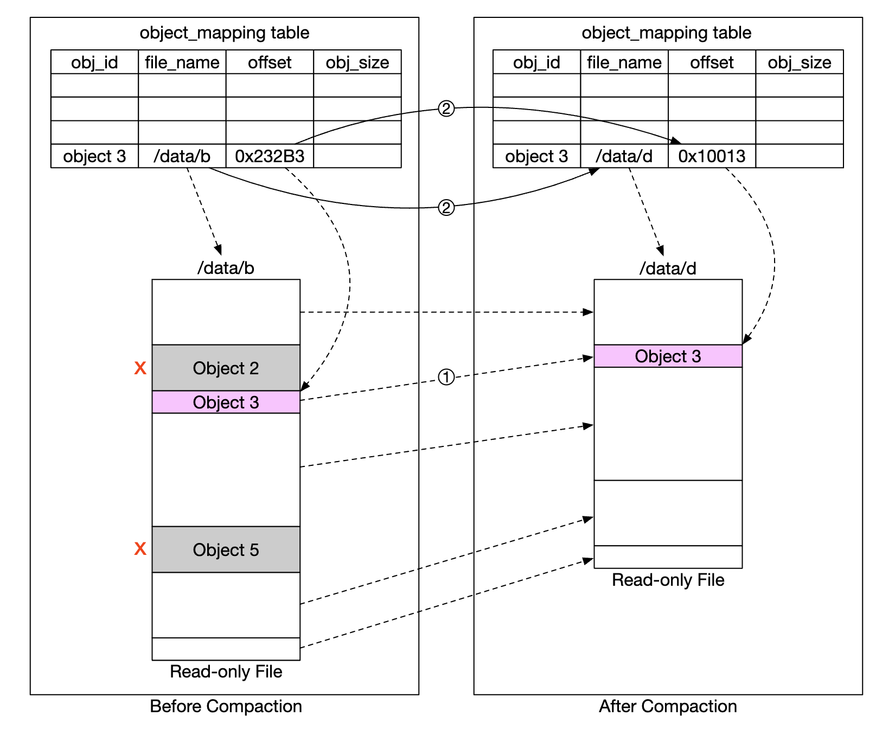
Step 4: Wrap up
- Object vs block vs file storage
- Upload, download, listing, versioning
- Data store (routing, placement, data nodes) vs metadata store
- Replication vs erasure coding, checksums
- Multipart upload, sharding, GC
- Pehle storage types ka 30-sec comparison — "object = immutable, flat, REST, cheap, durable".
- Estimation: 0.68B objects, ~0.68 TB metadata → "metadata aur data alag".
- Upload/download flows (IAM → metadata → data).
- Deep dive data store: placement service (Raft), primary-secondary replication, small-file packing + SQLite lookup.
- Durability math: failure domains, 3 replicas vs 8+4 EC (overhead 200% vs 50%).
- Metadata sharding by hash(bucket, object) + listing problem + versioning (delete marker) + multipart + GC.
Follow-up questions
- Q: Strong read-after-write consistency kaise?
- Metadata write synchronously commit hone ke baad hi PUT success; metadata store strongly consistent (consensus-backed). Data write all-replica ack ke saath.
- Q: Ek object bahut popular (hot)?
- CDN / read cache in front, aur read ko kisi bhi replica se allow karo.
- Q: Disk fail hua to repair?
- Placement service heartbeat miss detect kare → us disk ke objects ke liye naye replicas/EC chunks doosre domains pe rebuild; rebuild speed durability ka direct factor hai.
- Q: Bucket delete karna jismein billions objects?
- Async: bucket ko "deleting" mark, background GC batch mein objects hataye.
Key Takeaways
- Object store = immutable, flat KV over HTTP; metadata aur data alag aur independently scale.
- Placement service (Raft cluster) + virtual cluster map = failure-domain-aware placement.
- Chhote objects bade append-only files mein + local SQLite mapping (object → file, offset, size).
- Replication: simple, fast, 200% overhead (~6 nines). Erasure coding 8+4: 50% overhead (~11 nines), slower/complex.
- Checksums se silent corruption pakdo.
- Metadata shard by hash(bucket, object); listing ke liye denormalised table / cursor pagination.
- Versioning = append-only versions + delete marker; multipart for big files; GC via compaction.